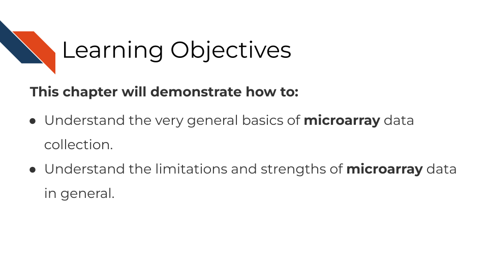
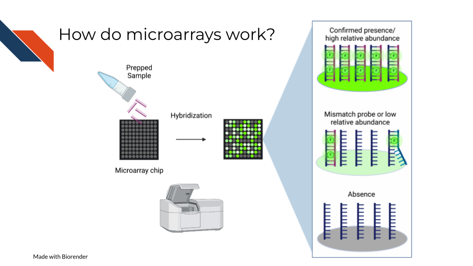
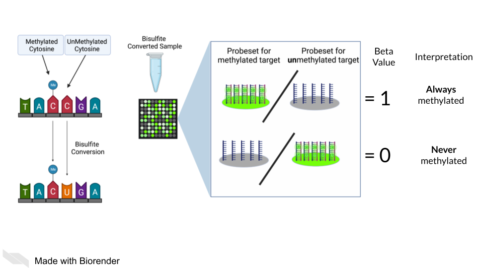
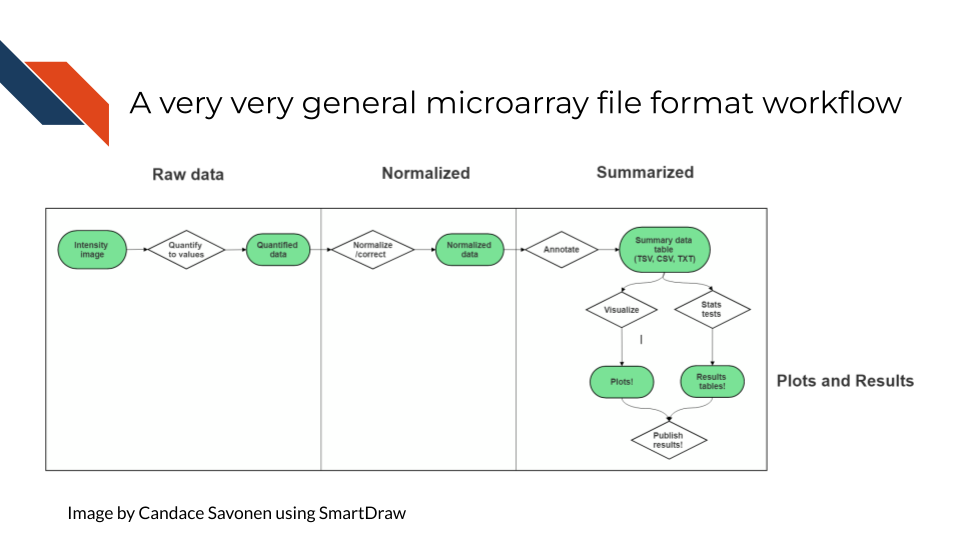

<!DOCTYPE html>
<html lang="" xml:lang="">
<head>

  <meta charset="utf-8" />
  <meta http-equiv="X-UA-Compatible" content="IE=edge" />
  <title>Chapter 7 Microarray Data | Choosing Genomics Tools</title>
  <meta name="description" content="Description about Course/Book." />
  <meta name="generator" content="bookdown 0.24 and GitBook 2.6.7" />

  <meta property="og:title" content="Chapter 7 Microarray Data | Choosing Genomics Tools" />
  <meta property="og:type" content="book" />
  
  
  <meta property="og:description" content="Description about Course/Book." />
  

  <meta name="twitter:card" content="summary" />
  <meta name="twitter:title" content="Chapter 7 Microarray Data | Choosing Genomics Tools" />
  
  <meta name="twitter:description" content="Description about Course/Book." />
  


  <meta name="viewport" content="width=device-width, initial-scale=1" />
  <meta name="apple-mobile-web-app-capable" content="yes" />
  <meta name="apple-mobile-web-app-status-bar-style" content="black" />
  
  <link rel="shortcut icon" href="assets/ITN_favicon.ico" type="image/x-icon" />
<link rel="prev" href="sequencing-data.html"/>
<link rel="next" href="annotating-genomes.html"/>
<script src="libs/header-attrs-2.10/header-attrs.js"></script>
<script src="libs/jquery-3.6.0/jquery-3.6.0.min.js"></script>
<script src="https://cdn.jsdelivr.net/npm/fuse.js@6.4.6/dist/fuse.min.js"></script>
<link href="libs/gitbook-2.6.7/css/style.css" rel="stylesheet" />
<link href="libs/gitbook-2.6.7/css/plugin-table.css" rel="stylesheet" />
<link href="libs/gitbook-2.6.7/css/plugin-bookdown.css" rel="stylesheet" />
<link href="libs/gitbook-2.6.7/css/plugin-highlight.css" rel="stylesheet" />
<link href="libs/gitbook-2.6.7/css/plugin-search.css" rel="stylesheet" />
<link href="libs/gitbook-2.6.7/css/plugin-fontsettings.css" rel="stylesheet" />
<link href="libs/gitbook-2.6.7/css/plugin-clipboard.css" rel="stylesheet" />


<link href="libs/anchor-sections-1.0.1/anchor-sections.css" rel="stylesheet" />
<script src="libs/anchor-sections-1.0.1/anchor-sections.js"></script>
  <html>
  
  <head>
  <title>Chapter 7 Microarray Data | Title</title>
  </head>
  
  <body>
  
  <!-- Global site tag (gtag.js) - Google Analytics -->
  <script async src="https://www.googletagmanager.com/gtag/js?id=G-QWJXTLJBQ7"></script>
  <script>
    window.dataLayer = window.dataLayer || [];
    function gtag(){dataLayer.push(arguments);}
    gtag('js', new Date());
    
    gtag('config', 'G-QWJXTLJBQ7');
  </script>
      
  </body>
  </html>


<style type="text/css">
/* Used with Pandoc 2.11+ new --citeproc when CSL is used */
div.csl-bib-body { }
div.csl-entry {
  clear: both;
}
.hanging div.csl-entry {
  margin-left:2em;
  text-indent:-2em;
}
div.csl-left-margin {
  min-width:2em;
  float:left;
}
div.csl-right-inline {
  margin-left:2em;
  padding-left:1em;
}
div.csl-indent {
  margin-left: 2em;
}
</style>

<link rel="stylesheet" href="assets/style_ITN.css" type="text/css" />
</head>

<body>


  <div class="book without-animation with-summary font-size-2 font-family-1" data-basepath=".">

    <div class="book-summary">
      <nav role="navigation">

<ul class="summary">
<a href="https://www.itcrtraining.org/">

<li class="divider"></li>
<li class="chapter" data-level="" data-path="index.html"><a href="index.html"><i class="fa fa-check"></i>About this Course</a>
<ul>
<li class="chapter" data-level="0.1" data-path="index.html"><a href="index.html#available-course-formats"><i class="fa fa-check"></i><b>0.1</b> Available course formats</a></li>
</ul></li>
<li class="chapter" data-level="1" data-path="introduction.html"><a href="introduction.html"><i class="fa fa-check"></i><b>1</b> Introduction</a>
<ul>
<li class="chapter" data-level="1.1" data-path="introduction.html"><a href="introduction.html#target-audience"><i class="fa fa-check"></i><b>1.1</b> Target Audience</a></li>
<li class="chapter" data-level="1.2" data-path="introduction.html"><a href="introduction.html#topics-covered"><i class="fa fa-check"></i><b>1.2</b> Topics covered:</a></li>
<li class="chapter" data-level="1.3" data-path="introduction.html"><a href="introduction.html#motivation"><i class="fa fa-check"></i><b>1.3</b> Motivation</a></li>
<li class="chapter" data-level="1.4" data-path="introduction.html"><a href="introduction.html#curriculum"><i class="fa fa-check"></i><b>1.4</b> Curriculum</a></li>
<li class="chapter" data-level="1.5" data-path="introduction.html"><a href="introduction.html#how-to-use-the-course"><i class="fa fa-check"></i><b>1.5</b> How to use the course</a></li>
</ul></li>
<li class="chapter" data-level="2" data-path="a-very-general-genomics-overview.html"><a href="a-very-general-genomics-overview.html"><i class="fa fa-check"></i><b>2</b> A Very General Genomics Overview</a>
<ul>
<li class="chapter" data-level="2.1" data-path="a-very-general-genomics-overview.html"><a href="a-very-general-genomics-overview.html#learning-objectives"><i class="fa fa-check"></i><b>2.1</b> Learning Objectives</a>
<ul>
<li class="chapter" data-level="2.1.1" data-path="a-very-general-genomics-overview.html"><a href="a-very-general-genomics-overview.html#what-do-genomics-workflows-look-like"><i class="fa fa-check"></i><b>2.1.1</b> What do genomics workflows look like?</a></li>
<li class="chapter" data-level="2.1.2" data-path="a-very-general-genomics-overview.html"><a href="a-very-general-genomics-overview.html#basic-file-formats"><i class="fa fa-check"></i><b>2.1.2</b> Basic file formats</a></li>
<li class="chapter" data-level="2.1.3" data-path="a-very-general-genomics-overview.html"><a href="a-very-general-genomics-overview.html#sequencing-file-formats"><i class="fa fa-check"></i><b>2.1.3</b> Sequencing file formats</a></li>
<li class="chapter" data-level="2.1.4" data-path="a-very-general-genomics-overview.html"><a href="a-very-general-genomics-overview.html#microarray-file-formats"><i class="fa fa-check"></i><b>2.1.4</b> Microarray file formats</a></li>
</ul></li>
<li class="chapter" data-level="2.2" data-path="a-very-general-genomics-overview.html"><a href="a-very-general-genomics-overview.html#general-informatics-files"><i class="fa fa-check"></i><b>2.2</b> General informatics files</a>
<ul>
<li class="chapter" data-level="2.2.1" data-path="a-very-general-genomics-overview.html"><a href="a-very-general-genomics-overview.html#other-files"><i class="fa fa-check"></i><b>2.2.1</b> Other files</a></li>
</ul></li>
</ul></li>
<li class="chapter" data-level="3" data-path="guidelines-for-good-metadata.html"><a href="guidelines-for-good-metadata.html"><i class="fa fa-check"></i><b>3</b> Guidelines for Good Metadata</a>
<ul>
<li class="chapter" data-level="3.1" data-path="guidelines-for-good-metadata.html"><a href="guidelines-for-good-metadata.html#learning-objectives-1"><i class="fa fa-check"></i><b>3.1</b> Learning Objectives</a></li>
<li class="chapter" data-level="3.2" data-path="guidelines-for-good-metadata.html"><a href="guidelines-for-good-metadata.html#what-are-metadata"><i class="fa fa-check"></i><b>3.2</b> What are metadata?</a></li>
<li class="chapter" data-level="3.3" data-path="guidelines-for-good-metadata.html"><a href="guidelines-for-good-metadata.html#how-to-create-metadata"><i class="fa fa-check"></i><b>3.3</b> How to create metadata?</a>
<ul>
<li class="chapter" data-level="3.3.1" data-path="guidelines-for-good-metadata.html"><a href="guidelines-for-good-metadata.html#the-goals-in-creating-your-metadata"><i class="fa fa-check"></i><b>3.3.1</b> The goals in creating your metadata:</a></li>
<li class="chapter" data-level="3.3.2" data-path="guidelines-for-good-metadata.html"><a href="guidelines-for-good-metadata.html#to-recap"><i class="fa fa-check"></i><b>3.3.2</b> To recap:</a></li>
</ul></li>
</ul></li>
<li class="chapter" data-level="4" data-path="considerations-for-choosing-tools.html"><a href="considerations-for-choosing-tools.html"><i class="fa fa-check"></i><b>4</b> Considerations for choosing tools</a>
<ul>
<li class="chapter" data-level="4.1" data-path="considerations-for-choosing-tools.html"><a href="considerations-for-choosing-tools.html#learning-objectives-2"><i class="fa fa-check"></i><b>4.1</b> Learning Objectives</a></li>
<li class="chapter" data-level="4.2" data-path="considerations-for-choosing-tools.html"><a href="considerations-for-choosing-tools.html#overview"><i class="fa fa-check"></i><b>4.2</b> Overview</a>
<ul>
<li class="chapter" data-level="4.2.1" data-path="considerations-for-choosing-tools.html"><a href="considerations-for-choosing-tools.html#is-this-tool-appropriate-for-your-data-type"><i class="fa fa-check"></i><b>4.2.1</b> Is this tool appropriate for your data type?</a></li>
<li class="chapter" data-level="4.2.2" data-path="considerations-for-choosing-tools.html"><a href="considerations-for-choosing-tools.html#is-this-tool-appropriate-for-your-scientific-question"><i class="fa fa-check"></i><b>4.2.2</b> Is this tool appropriate for your scientific question?</a></li>
<li class="chapter" data-level="4.2.3" data-path="considerations-for-choosing-tools.html"><a href="considerations-for-choosing-tools.html#is-this-tool-in-an-interface-or-programming-language-you-feel-comfortable-with"><i class="fa fa-check"></i><b>4.2.3</b> Is this tool in an interface or programming language you feel comfortable with?</a></li>
<li class="chapter" data-level="4.2.4" data-path="considerations-for-choosing-tools.html"><a href="considerations-for-choosing-tools.html#how-much-computing-power-do-you-have"><i class="fa fa-check"></i><b>4.2.4</b> How much computing power do you have?</a></li>
<li class="chapter" data-level="4.2.5" data-path="considerations-for-choosing-tools.html"><a href="considerations-for-choosing-tools.html#are-there-benchmarking-papers-that-compare-this-tool-to-other-options"><i class="fa fa-check"></i><b>4.2.5</b> Are there benchmarking papers that compare this tool to other options?</a></li>
<li class="chapter" data-level="4.2.6" data-path="considerations-for-choosing-tools.html"><a href="considerations-for-choosing-tools.html#is-the-tool-well-documented-and-usable"><i class="fa fa-check"></i><b>4.2.6</b> Is the tool well documented and usable?</a></li>
<li class="chapter" data-level="4.2.7" data-path="considerations-for-choosing-tools.html"><a href="considerations-for-choosing-tools.html#is-the-tool-well-maintained"><i class="fa fa-check"></i><b>4.2.7</b> Is the tool well maintained?</a></li>
<li class="chapter" data-level="4.2.8" data-path="considerations-for-choosing-tools.html"><a href="considerations-for-choosing-tools.html#is-the-tool-generally-accepted-by-the-field"><i class="fa fa-check"></i><b>4.2.8</b> Is the tool generally accepted by the field?</a></li>
</ul></li>
<li class="chapter" data-level="4.3" data-path="considerations-for-choosing-tools.html"><a href="considerations-for-choosing-tools.html#coming-to-a-decision"><i class="fa fa-check"></i><b>4.3</b> Coming to a decision</a></li>
<li class="chapter" data-level="4.4" data-path="considerations-for-choosing-tools.html"><a href="considerations-for-choosing-tools.html#more-resources"><i class="fa fa-check"></i><b>4.4</b> More resources</a></li>
</ul></li>
<li class="chapter" data-level="5" data-path="general-data-analysis-tools.html"><a href="general-data-analysis-tools.html"><i class="fa fa-check"></i><b>5</b> General Data Analysis Tools</a>
<ul>
<li class="chapter" data-level="5.1" data-path="general-data-analysis-tools.html"><a href="general-data-analysis-tools.html#learning-objectives-3"><i class="fa fa-check"></i><b>5.1</b> Learning Objectives</a></li>
<li class="chapter" data-level="5.2" data-path="general-data-analysis-tools.html"><a href="general-data-analysis-tools.html#command-line-vs-gui"><i class="fa fa-check"></i><b>5.2</b> Command Line vs GUI</a>
<ul>
<li class="chapter" data-level="5.2.1" data-path="general-data-analysis-tools.html"><a href="general-data-analysis-tools.html#bash"><i class="fa fa-check"></i><b>5.2.1</b> Bash</a></li>
<li class="chapter" data-level="5.2.2" data-path="general-data-analysis-tools.html"><a href="general-data-analysis-tools.html#r"><i class="fa fa-check"></i><b>5.2.2</b> R</a></li>
<li class="chapter" data-level="5.2.3" data-path="general-data-analysis-tools.html"><a href="general-data-analysis-tools.html#python"><i class="fa fa-check"></i><b>5.2.3</b> Python</a></li>
</ul></li>
<li class="chapter" data-level="5.3" data-path="general-data-analysis-tools.html"><a href="general-data-analysis-tools.html#more-resources-1"><i class="fa fa-check"></i><b>5.3</b> More resources</a></li>
</ul></li>
<li class="chapter" data-level="6" data-path="sequencing-data.html"><a href="sequencing-data.html"><i class="fa fa-check"></i><b>6</b> Sequencing Data</a>
<ul>
<li class="chapter" data-level="6.1" data-path="sequencing-data.html"><a href="sequencing-data.html#learning-objectives-4"><i class="fa fa-check"></i><b>6.1</b> Learning Objectives</a></li>
<li class="chapter" data-level="6.2" data-path="sequencing-data.html"><a href="sequencing-data.html#how-does-sequencing-work"><i class="fa fa-check"></i><b>6.2</b> How does sequencing work?</a></li>
<li class="chapter" data-level="6.3" data-path="sequencing-data.html"><a href="sequencing-data.html#sequencing-concepts"><i class="fa fa-check"></i><b>6.3</b> Sequencing concepts</a>
<ul>
<li class="chapter" data-level="6.3.1" data-path="sequencing-data.html"><a href="sequencing-data.html#inherent-biases"><i class="fa fa-check"></i><b>6.3.1</b> Inherent biases</a></li>
<li class="chapter" data-level="6.3.2" data-path="sequencing-data.html"><a href="sequencing-data.html#pcr-amplification"><i class="fa fa-check"></i><b>6.3.2</b> PCR Amplification</a></li>
<li class="chapter" data-level="6.3.3" data-path="sequencing-data.html"><a href="sequencing-data.html#depth-of-coverage"><i class="fa fa-check"></i><b>6.3.3</b> Depth of coverage</a></li>
<li class="chapter" data-level="6.3.4" data-path="sequencing-data.html"><a href="sequencing-data.html#quality-controls"><i class="fa fa-check"></i><b>6.3.4</b> Quality controls</a></li>
<li class="chapter" data-level="6.3.5" data-path="sequencing-data.html"><a href="sequencing-data.html#alignment"><i class="fa fa-check"></i><b>6.3.5</b> Alignment</a></li>
<li class="chapter" data-level="6.3.6" data-path="sequencing-data.html"><a href="sequencing-data.html#single-end-vs-paired-end"><i class="fa fa-check"></i><b>6.3.6</b> Single End vs Paired End</a></li>
</ul></li>
<li class="chapter" data-level="6.4" data-path="sequencing-data.html"><a href="sequencing-data.html#very-general-sequencing-workflow"><i class="fa fa-check"></i><b>6.4</b> Very General Sequencing Workflow</a>
<ul>
<li class="chapter" data-level="6.4.1" data-path="sequencing-data.html"><a href="sequencing-data.html#sequencing-file-formats-1"><i class="fa fa-check"></i><b>6.4.1</b> Sequencing file formats</a></li>
<li class="chapter" data-level="6.4.2" data-path="sequencing-data.html"><a href="sequencing-data.html#other-files-1"><i class="fa fa-check"></i><b>6.4.2</b> Other files</a></li>
</ul></li>
</ul></li>
<li class="chapter" data-level="7" data-path="microarray-data.html"><a href="microarray-data.html"><i class="fa fa-check"></i><b>7</b> Microarray Data</a>
<ul>
<li class="chapter" data-level="7.1" data-path="microarray-data.html"><a href="microarray-data.html#learning-objectives-5"><i class="fa fa-check"></i><b>7.1</b> Learning Objectives</a></li>
<li class="chapter" data-level="7.2" data-path="microarray-data.html"><a href="microarray-data.html#summary-of-microarrays"><i class="fa fa-check"></i><b>7.2</b> Summary of microarrays</a></li>
<li class="chapter" data-level="7.3" data-path="microarray-data.html"><a href="microarray-data.html#how-do-microarrays-work"><i class="fa fa-check"></i><b>7.3</b> How do microarrays work?</a>
<ul>
<li class="chapter" data-level="7.3.1" data-path="microarray-data.html"><a href="microarray-data.html#pros"><i class="fa fa-check"></i><b>7.3.1</b> Pros:</a></li>
<li class="chapter" data-level="7.3.2" data-path="microarray-data.html"><a href="microarray-data.html#cons"><i class="fa fa-check"></i><b>7.3.2</b> Cons:</a></li>
</ul></li>
<li class="chapter" data-level="7.4" data-path="microarray-data.html"><a href="microarray-data.html#what-types-of-arrays-are-there"><i class="fa fa-check"></i><b>7.4</b> What types of arrays are there?</a>
<ul>
<li class="chapter" data-level="7.4.1" data-path="microarray-data.html"><a href="microarray-data.html#snp-arrays"><i class="fa fa-check"></i><b>7.4.1</b> SNP arrays</a></li>
<li class="chapter" data-level="7.4.2" data-path="microarray-data.html"><a href="microarray-data.html#gene-expression-arrays"><i class="fa fa-check"></i><b>7.4.2</b> Gene expression arrays</a></li>
<li class="chapter" data-level="7.4.3" data-path="microarray-data.html"><a href="microarray-data.html#dna-methylation-arrays"><i class="fa fa-check"></i><b>7.4.3</b> DNA methylation arrays</a></li>
</ul></li>
<li class="chapter" data-level="7.5" data-path="microarray-data.html"><a href="microarray-data.html#general-processing-of-microarray-data"><i class="fa fa-check"></i><b>7.5</b> General processing of microarray data</a>
<ul>
<li class="chapter" data-level="7.5.1" data-path="microarray-data.html"><a href="microarray-data.html#examples-2"><i class="fa fa-check"></i><b>7.5.1</b> Examples</a></li>
<li class="chapter" data-level="7.5.2" data-path="microarray-data.html"><a href="microarray-data.html#microarray-platforms"><i class="fa fa-check"></i><b>7.5.2</b> Microarray Platforms</a></li>
</ul></li>
<li class="chapter" data-level="7.6" data-path="microarray-data.html"><a href="microarray-data.html#very-general-microarray-workflow"><i class="fa fa-check"></i><b>7.6</b> Very General Microarray Workflow</a>
<ul>
<li class="chapter" data-level="7.6.1" data-path="microarray-data.html"><a href="microarray-data.html#microarray-file-formats-1"><i class="fa fa-check"></i><b>7.6.1</b> Microarray file formats</a></li>
</ul></li>
<li class="chapter" data-level="7.7" data-path="microarray-data.html"><a href="microarray-data.html#general-informatics-files-1"><i class="fa fa-check"></i><b>7.7</b> General informatics files</a>
<ul>
<li class="chapter" data-level="7.7.1" data-path="microarray-data.html"><a href="microarray-data.html#other-files-2"><i class="fa fa-check"></i><b>7.7.1</b> Other files</a></li>
<li class="chapter" data-level="7.7.2" data-path="microarray-data.html"><a href="microarray-data.html#microarray-processing-tutorials"><i class="fa fa-check"></i><b>7.7.2</b> Microarray processing tutorials:</a></li>
</ul></li>
</ul></li>
<li class="chapter" data-level="8" data-path="annotating-genomes.html"><a href="annotating-genomes.html"><i class="fa fa-check"></i><b>8</b> Annotating Genomes</a>
<ul>
<li class="chapter" data-level="8.1" data-path="annotating-genomes.html"><a href="annotating-genomes.html#learning-objectives-6"><i class="fa fa-check"></i><b>8.1</b> Learning Objectives</a></li>
<li class="chapter" data-level="8.2" data-path="annotating-genomes.html"><a href="annotating-genomes.html#what-are-reference-genomes"><i class="fa fa-check"></i><b>8.2</b> What are reference genomes?</a></li>
<li class="chapter" data-level="8.3" data-path="annotating-genomes.html"><a href="annotating-genomes.html#what-are-genome-versions"><i class="fa fa-check"></i><b>8.3</b> What are genome versions?</a></li>
<li class="chapter" data-level="8.4" data-path="annotating-genomes.html"><a href="annotating-genomes.html#what-are-the-different-files"><i class="fa fa-check"></i><b>8.4</b> What are the different files?</a>
<ul>
<li class="chapter" data-level="8.4.1" data-path="annotating-genomes.html"><a href="annotating-genomes.html#how-to-download-annotation-files"><i class="fa fa-check"></i><b>8.4.1</b> How to download annotation files</a></li>
</ul></li>
<li class="chapter" data-level="8.5" data-path="annotating-genomes.html"><a href="annotating-genomes.html#considerations-for-annotating-genomic-data"><i class="fa fa-check"></i><b>8.5</b> Considerations for annotating genomic data</a>
<ul>
<li class="chapter" data-level="8.5.1" data-path="annotating-genomes.html"><a href="annotating-genomes.html#make-sure-you-have-the-right-file-to-start"><i class="fa fa-check"></i><b>8.5.1</b> Make sure you have the right file to start!</a></li>
<li class="chapter" data-level="8.5.2" data-path="annotating-genomes.html"><a href="annotating-genomes.html#be-consistent-in-your-annotations"><i class="fa fa-check"></i><b>8.5.2</b> Be consistent in your annotations</a></li>
<li class="chapter" data-level="8.5.3" data-path="annotating-genomes.html"><a href="annotating-genomes.html#be-clear-in-your-write-ups"><i class="fa fa-check"></i><b>8.5.3</b> Be clear in your write ups!</a></li>
</ul></li>
<li class="chapter" data-level="8.6" data-path="annotating-genomes.html"><a href="annotating-genomes.html#resources-you-will-need-for-annotation"><i class="fa fa-check"></i><b>8.6</b> Resources you will need for annotation!</a>
<ul>
<li class="chapter" data-level="8.6.1" data-path="annotating-genomes.html"><a href="annotating-genomes.html#annotation-databases"><i class="fa fa-check"></i><b>8.6.1</b> Annotation databases</a></li>
<li class="chapter" data-level="8.6.2" data-path="annotating-genomes.html"><a href="annotating-genomes.html#gui-based-annotation-tools"><i class="fa fa-check"></i><b>8.6.2</b> GUI based annotation tools</a></li>
<li class="chapter" data-level="8.6.3" data-path="annotating-genomes.html"><a href="annotating-genomes.html#command-line-based-tools"><i class="fa fa-check"></i><b>8.6.3</b> Command line based tools</a></li>
<li class="chapter" data-level="8.6.4" data-path="annotating-genomes.html"><a href="annotating-genomes.html#more-resources-about-genome-annotation"><i class="fa fa-check"></i><b>8.6.4</b> More resources about genome annotation</a></li>
</ul></li>
</ul></li>
<li class="part"><span><b>Specific Data Types</b></span></li>
<li class="chapter" data-level="9" data-path="dna-methods-overview.html"><a href="dna-methods-overview.html"><i class="fa fa-check"></i><b>9</b> DNA Methods Overview</a>
<ul>
<li class="chapter" data-level="9.1" data-path="dna-methods-overview.html"><a href="dna-methods-overview.html#learning-objectives-7"><i class="fa fa-check"></i><b>9.1</b> Learning Objectives</a></li>
<li class="chapter" data-level="9.2" data-path="dna-methods-overview.html"><a href="dna-methods-overview.html#what-are-the-goals-of-analyzing-dna-sequences"><i class="fa fa-check"></i><b>9.2</b> What are the goals of analyzing DNA sequences?</a></li>
<li class="chapter" data-level="9.3" data-path="dna-methods-overview.html"><a href="dna-methods-overview.html#comparison-of-dna-methods"><i class="fa fa-check"></i><b>9.3</b> Comparison of DNA methods</a></li>
<li class="chapter" data-level="9.4" data-path="dna-methods-overview.html"><a href="dna-methods-overview.html#how-to-choose-a-dna-sequencing-method"><i class="fa fa-check"></i><b>9.4</b> How to choose a DNA sequencing method</a>
<ul>
<li class="chapter" data-level="9.4.1" data-path="dna-methods-overview.html"><a href="dna-methods-overview.html#what-regions-of-the-genome-pertain-to-your-research-question"><i class="fa fa-check"></i><b>9.4.1</b> 1. What region(s) of the genome pertain to your research question?</a></li>
<li class="chapter" data-level="9.4.2" data-path="dna-methods-overview.html"><a href="dna-methods-overview.html#what-does-your-project-budget-allow-for"><i class="fa fa-check"></i><b>9.4.2</b> 2. What does your project budget allow for?</a></li>
<li class="chapter" data-level="9.4.3" data-path="dna-methods-overview.html"><a href="dna-methods-overview.html#what-is-your-detection-power-for-these-variants"><i class="fa fa-check"></i><b>9.4.3</b> 3. What is your detection power for these variants?</a></li>
</ul></li>
<li class="chapter" data-level="9.5" data-path="dna-methods-overview.html"><a href="dna-methods-overview.html#strengths-and-weaknesses-of-different-methods"><i class="fa fa-check"></i><b>9.5</b> Strengths and Weaknesses of different methods</a></li>
</ul></li>
<li class="chapter" data-level="10" data-path="whole-genome-or-exome-sequencing.html"><a href="whole-genome-or-exome-sequencing.html"><i class="fa fa-check"></i><b>10</b> Whole Genome or Exome Sequencing</a>
<ul>
<li class="chapter" data-level="10.1" data-path="whole-genome-or-exome-sequencing.html"><a href="whole-genome-or-exome-sequencing.html#learning-objectives-8"><i class="fa fa-check"></i><b>10.1</b> Learning Objectives</a></li>
<li class="chapter" data-level="10.2" data-path="whole-genome-or-exome-sequencing.html"><a href="whole-genome-or-exome-sequencing.html#wgs-and-wgs-overview"><i class="fa fa-check"></i><b>10.2</b> WGS and WGS Overview</a></li>
<li class="chapter" data-level="10.3" data-path="whole-genome-or-exome-sequencing.html"><a href="whole-genome-or-exome-sequencing.html#advantages-and-disadvantages-of-wgs-vs-wxs"><i class="fa fa-check"></i><b>10.3</b> Advantages and Disadvantages of WGS vs WXS</a></li>
<li class="chapter" data-level="10.4" data-path="whole-genome-or-exome-sequencing.html"><a href="whole-genome-or-exome-sequencing.html#wgswxs-considerations"><i class="fa fa-check"></i><b>10.4</b> WGS/WXS Considerations</a>
<ul>
<li class="chapter" data-level="10.4.1" data-path="whole-genome-or-exome-sequencing.html"><a href="whole-genome-or-exome-sequencing.html#target-enrichment-techniques"><i class="fa fa-check"></i><b>10.4.1</b> Target enrichment techniques</a></li>
</ul></li>
<li class="chapter" data-level="10.5" data-path="whole-genome-or-exome-sequencing.html"><a href="whole-genome-or-exome-sequencing.html#dna-sequencing-pipeline-overview"><i class="fa fa-check"></i><b>10.5</b> DNA Sequencing Pipeline Overview</a></li>
<li class="chapter" data-level="10.6" data-path="whole-genome-or-exome-sequencing.html"><a href="whole-genome-or-exome-sequencing.html#data-pre-processing"><i class="fa fa-check"></i><b>10.6</b> Data Pre-processing</a></li>
<li class="chapter" data-level="10.7" data-path="whole-genome-or-exome-sequencing.html"><a href="whole-genome-or-exome-sequencing.html#commonly-used-tools"><i class="fa fa-check"></i><b>10.7</b> Commonly Used Tools</a></li>
<li class="chapter" data-level="10.8" data-path="whole-genome-or-exome-sequencing.html"><a href="whole-genome-or-exome-sequencing.html#data-pre-processing-tools"><i class="fa fa-check"></i><b>10.8</b> Data pre-processing tools</a></li>
<li class="chapter" data-level="10.9" data-path="whole-genome-or-exome-sequencing.html"><a href="whole-genome-or-exome-sequencing.html#tools-for-somatic-and-germline-variant-identification"><i class="fa fa-check"></i><b>10.9</b> Tools for somatic and germline variant identification</a></li>
<li class="chapter" data-level="10.10" data-path="whole-genome-or-exome-sequencing.html"><a href="whole-genome-or-exome-sequencing.html#tools-for-variant-calling-annotation"><i class="fa fa-check"></i><b>10.10</b> Tools for variant calling annotation</a></li>
<li class="chapter" data-level="10.11" data-path="whole-genome-or-exome-sequencing.html"><a href="whole-genome-or-exome-sequencing.html#tools-for-copy-number-variation-analysis"><i class="fa fa-check"></i><b>10.11</b> Tools for copy number variation analysis</a></li>
<li class="chapter" data-level="10.12" data-path="whole-genome-or-exome-sequencing.html"><a href="whole-genome-or-exome-sequencing.html#tools-for-data-visualization"><i class="fa fa-check"></i><b>10.12</b> Tools for data visualization</a></li>
<li class="chapter" data-level="10.13" data-path="whole-genome-or-exome-sequencing.html"><a href="whole-genome-or-exome-sequencing.html#resources-for-wgs"><i class="fa fa-check"></i><b>10.13</b> Resources for WGS</a></li>
</ul></li>
<li class="chapter" data-level="11" data-path="rna-methods-overview.html"><a href="rna-methods-overview.html"><i class="fa fa-check"></i><b>11</b> RNA Methods Overview</a>
<ul>
<li class="chapter" data-level="11.1" data-path="rna-methods-overview.html"><a href="rna-methods-overview.html#learning-objectives-9"><i class="fa fa-check"></i><b>11.1</b> Learning Objectives</a></li>
<li class="chapter" data-level="11.2" data-path="rna-methods-overview.html"><a href="rna-methods-overview.html#what-are-the-goals-of-gene-expression-analysis"><i class="fa fa-check"></i><b>11.2</b> What are the goals of gene expression analysis?</a></li>
<li class="chapter" data-level="11.3" data-path="rna-methods-overview.html"><a href="rna-methods-overview.html#comparison-of-rna-methods"><i class="fa fa-check"></i><b>11.3</b> Comparison of RNA methods</a>
<ul>
<li class="chapter" data-level="11.3.1" data-path="rna-methods-overview.html"><a href="rna-methods-overview.html#single-cell-rna-seq-scrna-seq"><i class="fa fa-check"></i><b>11.3.1</b> Single-cell RNA-seq (scRNA-seq):</a></li>
<li class="chapter" data-level="11.3.2" data-path="rna-methods-overview.html"><a href="rna-methods-overview.html#bulk-rna-seq"><i class="fa fa-check"></i><b>11.3.2</b> Bulk RNA-seq:</a></li>
<li class="chapter" data-level="11.3.3" data-path="rna-methods-overview.html"><a href="rna-methods-overview.html#gene-expression-microarray"><i class="fa fa-check"></i><b>11.3.3</b> Gene Expression Microarray:</a></li>
<li class="chapter" data-level="11.3.4" data-path="rna-methods-overview.html"><a href="rna-methods-overview.html#spatial-transcriptomics"><i class="fa fa-check"></i><b>11.3.4</b> Spatial Transcriptomics:</a></li>
</ul></li>
</ul></li>
<li class="chapter" data-level="12" data-path="bulk-rna-seq-1.html"><a href="bulk-rna-seq-1.html"><i class="fa fa-check"></i><b>12</b> Bulk RNA-seq</a>
<ul>
<li class="chapter" data-level="12.1" data-path="bulk-rna-seq-1.html"><a href="bulk-rna-seq-1.html#learning-objectives-10"><i class="fa fa-check"></i><b>12.1</b> Learning Objectives</a></li>
<li class="chapter" data-level="12.2" data-path="bulk-rna-seq-1.html"><a href="bulk-rna-seq-1.html#where-rna-seq-data-comes-from"><i class="fa fa-check"></i><b>12.2</b> Where RNA-seq data comes from</a></li>
<li class="chapter" data-level="12.3" data-path="bulk-rna-seq-1.html"><a href="bulk-rna-seq-1.html#rna-seq-workflow"><i class="fa fa-check"></i><b>12.3</b> RNA-seq workflow</a></li>
<li class="chapter" data-level="12.4" data-path="bulk-rna-seq-1.html"><a href="bulk-rna-seq-1.html#rna-seq-data-strengths"><i class="fa fa-check"></i><b>12.4</b> RNA-seq data <strong>strengths</strong></a></li>
<li class="chapter" data-level="12.5" data-path="bulk-rna-seq-1.html"><a href="bulk-rna-seq-1.html#rna-seq-data-limitations"><i class="fa fa-check"></i><b>12.5</b> RNA-seq data <strong>limitations</strong></a></li>
<li class="chapter" data-level="12.6" data-path="bulk-rna-seq-1.html"><a href="bulk-rna-seq-1.html#rna-seq-data-considerations"><i class="fa fa-check"></i><b>12.6</b> RNA-seq data considerations</a>
<ul>
<li class="chapter" data-level="12.6.1" data-path="bulk-rna-seq-1.html"><a href="bulk-rna-seq-1.html#ribo-minus-vs-poly-a-selection"><i class="fa fa-check"></i><b>12.6.1</b> Ribo minus vs poly A selection</a></li>
<li class="chapter" data-level="12.6.2" data-path="bulk-rna-seq-1.html"><a href="bulk-rna-seq-1.html#transcriptome-mapping"><i class="fa fa-check"></i><b>12.6.2</b> Transcriptome mapping</a></li>
<li class="chapter" data-level="12.6.3" data-path="bulk-rna-seq-1.html"><a href="bulk-rna-seq-1.html#abundance-measures"><i class="fa fa-check"></i><b>12.6.3</b> Abundance measures</a></li>
<li class="chapter" data-level="12.6.4" data-path="bulk-rna-seq-1.html"><a href="bulk-rna-seq-1.html#rna-seq-downstream-analysis-tools"><i class="fa fa-check"></i><b>12.6.4</b> RNA-seq downstream analysis tools</a></li>
</ul></li>
<li class="chapter" data-level="12.7" data-path="bulk-rna-seq-1.html"><a href="bulk-rna-seq-1.html#visualization-gui-tools"><i class="fa fa-check"></i><b>12.7</b> Visualization GUI tools</a></li>
<li class="chapter" data-level="12.8" data-path="bulk-rna-seq-1.html"><a href="bulk-rna-seq-1.html#rna-seq-data-resources"><i class="fa fa-check"></i><b>12.8</b> RNA-seq data resources</a></li>
<li class="chapter" data-level="12.9" data-path="bulk-rna-seq-1.html"><a href="bulk-rna-seq-1.html#more-reading-about-rna-seq-data"><i class="fa fa-check"></i><b>12.9</b> More reading about RNA-seq data</a></li>
</ul></li>
<li class="chapter" data-level="13" data-path="single-cell-rna-seq.html"><a href="single-cell-rna-seq.html"><i class="fa fa-check"></i><b>13</b> Single-cell RNA-seq</a>
<ul>
<li class="chapter" data-level="13.1" data-path="single-cell-rna-seq.html"><a href="single-cell-rna-seq.html#learning-objectives-11"><i class="fa fa-check"></i><b>13.1</b> Learning Objectives</a></li>
<li class="chapter" data-level="13.2" data-path="single-cell-rna-seq.html"><a href="single-cell-rna-seq.html#where-single-cell-rna-seq-data-comes-from"><i class="fa fa-check"></i><b>13.2</b> Where single-cell RNA-seq data comes from</a></li>
<li class="chapter" data-level="13.3" data-path="single-cell-rna-seq.html"><a href="single-cell-rna-seq.html#single-cell-rna-seq-data-types"><i class="fa fa-check"></i><b>13.3</b> Single-cell RNA-seq data types</a>
<ul>
<li class="chapter" data-level="13.3.1" data-path="single-cell-rna-seq.html"><a href="single-cell-rna-seq.html#unique-molecular-identifiers"><i class="fa fa-check"></i><b>13.3.1</b> Unique Molecular identifiers</a></li>
</ul></li>
<li class="chapter" data-level="13.4" data-path="single-cell-rna-seq.html"><a href="single-cell-rna-seq.html#single-cell-rna-seq-tools"><i class="fa fa-check"></i><b>13.4</b> Single cell RNA-seq tools</a></li>
<li class="chapter" data-level="13.5" data-path="single-cell-rna-seq.html"><a href="single-cell-rna-seq.html#quantification-and-alignment-tools"><i class="fa fa-check"></i><b>13.5</b> Quantification and alignment tools</a></li>
<li class="chapter" data-level="13.6" data-path="single-cell-rna-seq.html"><a href="single-cell-rna-seq.html#downstream-tools-pros-and-cons"><i class="fa fa-check"></i><b>13.6</b> Downstream tools Pros and Cons</a>
<ul>
<li class="chapter" data-level="13.6.1" data-path="single-cell-rna-seq.html"><a href="single-cell-rna-seq.html#doublet-tool-pros-and-cons"><i class="fa fa-check"></i><b>13.6.1</b> Doublet Tool Pros and Cons</a></li>
</ul></li>
<li class="chapter" data-level="13.7" data-path="single-cell-rna-seq.html"><a href="single-cell-rna-seq.html#more-scrna-seq-tools-and-tutorials"><i class="fa fa-check"></i><b>13.7</b> More scRNA-seq tools and tutorials</a></li>
<li class="chapter" data-level="13.8" data-path="single-cell-rna-seq.html"><a href="single-cell-rna-seq.html#visualization-gui-tools-1"><i class="fa fa-check"></i><b>13.8</b> Visualization GUI tools</a></li>
<li class="chapter" data-level="13.9" data-path="single-cell-rna-seq.html"><a href="single-cell-rna-seq.html#useful-tutorials"><i class="fa fa-check"></i><b>13.9</b> Useful tutorials</a></li>
<li class="chapter" data-level="13.10" data-path="single-cell-rna-seq.html"><a href="single-cell-rna-seq.html#useful-readings"><i class="fa fa-check"></i><b>13.10</b> Useful readings</a></li>
</ul></li>
<li class="chapter" data-level="14" data-path="spatial-transcriptomics-1.html"><a href="spatial-transcriptomics-1.html"><i class="fa fa-check"></i><b>14</b> Spatial transcriptomics</a>
<ul>
<li class="chapter" data-level="14.1" data-path="spatial-transcriptomics-1.html"><a href="spatial-transcriptomics-1.html#learning-objectives-12"><i class="fa fa-check"></i><b>14.1</b> Learning objectives</a></li>
<li class="chapter" data-level="14.2" data-path="spatial-transcriptomics-1.html"><a href="spatial-transcriptomics-1.html#what-are-the-goals-of-spatial-transcriptomic-analysis"><i class="fa fa-check"></i><b>14.2</b> What are the goals of spatial transcriptomic analysis?</a></li>
<li class="chapter" data-level="14.3" data-path="spatial-transcriptomics-1.html"><a href="spatial-transcriptomics-1.html#overview-of-a-spatial-transcriptomics-workflow"><i class="fa fa-check"></i><b>14.3</b> Overview of a spatial transcriptomics workflow</a></li>
<li class="chapter" data-level="14.4" data-path="spatial-transcriptomics-1.html"><a href="spatial-transcriptomics-1.html#spatial-transcriptomic-data-strengths"><i class="fa fa-check"></i><b>14.4</b> Spatial transcriptomic data <strong>strengths</strong>:</a></li>
<li class="chapter" data-level="14.5" data-path="spatial-transcriptomics-1.html"><a href="spatial-transcriptomics-1.html#spatial-transcriptomic-data-weaknesses"><i class="fa fa-check"></i><b>14.5</b> Spatial transcriptomic data <strong>weaknesses</strong>:</a></li>
<li class="chapter" data-level="14.6" data-path="spatial-transcriptomics-1.html"><a href="spatial-transcriptomics-1.html#tools-for-spatial-transcriptomics"><i class="fa fa-check"></i><b>14.6</b> Tools for spatial transcriptomics</a>
<ul>
<li class="chapter" data-level="14.6.1" data-path="spatial-transcriptomics-1.html"><a href="spatial-transcriptomics-1.html#data-processing"><i class="fa fa-check"></i><b>14.6.1</b> Data processing:</a></li>
<li class="chapter" data-level="14.6.2" data-path="spatial-transcriptomics-1.html"><a href="spatial-transcriptomics-1.html#data-exploration"><i class="fa fa-check"></i><b>14.6.2</b> Data exploration:</a></li>
<li class="chapter" data-level="14.6.3" data-path="spatial-transcriptomics-1.html"><a href="spatial-transcriptomics-1.html#clusteringtissue-domain-identification"><i class="fa fa-check"></i><b>14.6.3</b> Clustering/tissue domain identification:</a></li>
<li class="chapter" data-level="14.6.4" data-path="spatial-transcriptomics-1.html"><a href="spatial-transcriptomics-1.html#spatially-variable-gene-identification"><i class="fa fa-check"></i><b>14.6.4</b> Spatially variable gene identification:</a></li>
<li class="chapter" data-level="14.6.5" data-path="spatial-transcriptomics-1.html"><a href="spatial-transcriptomics-1.html#deconvolutionphenotyping"><i class="fa fa-check"></i><b>14.6.5</b> Deconvolution/phenotyping:</a></li>
<li class="chapter" data-level="14.6.6" data-path="spatial-transcriptomics-1.html"><a href="spatial-transcriptomics-1.html#cell-communication"><i class="fa fa-check"></i><b>14.6.6</b> Cell communication:</a></li>
</ul></li>
<li class="chapter" data-level="14.7" data-path="spatial-transcriptomics-1.html"><a href="spatial-transcriptomics-1.html#more-tools-and-tutorials-regarding-spatial-transcriptomics"><i class="fa fa-check"></i><b>14.7</b> More tools and tutorials regarding spatial transcriptomics</a></li>
</ul></li>
<li class="chapter" data-level="15" data-path="chromatin-methods-overview.html"><a href="chromatin-methods-overview.html"><i class="fa fa-check"></i><b>15</b> Chromatin Methods Overview</a>
<ul>
<li class="chapter" data-level="15.1" data-path="chromatin-methods-overview.html"><a href="chromatin-methods-overview.html#learning-objectives-13"><i class="fa fa-check"></i><b>15.1</b> Learning Objectives</a></li>
<li class="chapter" data-level="15.2" data-path="chromatin-methods-overview.html"><a href="chromatin-methods-overview.html#why-are-people-interested-in-chromatin"><i class="fa fa-check"></i><b>15.2</b> Why are people interested in chromatin?</a></li>
<li class="chapter" data-level="15.3" data-path="chromatin-methods-overview.html"><a href="chromatin-methods-overview.html#what-kinds-of-questions-can-chromatin-answer"><i class="fa fa-check"></i><b>15.3</b> What kinds of questions can chromatin answer?</a>
<ul>
<li class="chapter" data-level="15.3.1" data-path="chromatin-methods-overview.html"><a href="chromatin-methods-overview.html#chromatin-is-involved-in-a-variety-of-biological-processes"><i class="fa fa-check"></i><b>15.3.1</b> Chromatin is involved in a variety of biological processes:</a></li>
</ul></li>
<li class="chapter" data-level="15.4" data-path="chromatin-methods-overview.html"><a href="chromatin-methods-overview.html#comparison-of-technologies"><i class="fa fa-check"></i><b>15.4</b> Comparison of technologies</a>
<ul>
<li class="chapter" data-level="15.4.1" data-path="chromatin-methods-overview.html"><a href="chromatin-methods-overview.html#atac-seq"><i class="fa fa-check"></i><b>15.4.1</b> ATAC-seq:</a></li>
<li class="chapter" data-level="15.4.2" data-path="chromatin-methods-overview.html"><a href="chromatin-methods-overview.html#single-cell-atac-seq"><i class="fa fa-check"></i><b>15.4.2</b> Single-cell ATAC-seq:</a></li>
<li class="chapter" data-level="15.4.3" data-path="chromatin-methods-overview.html"><a href="chromatin-methods-overview.html#chip-seq"><i class="fa fa-check"></i><b>15.4.3</b> ChIP-seq:</a></li>
<li class="chapter" data-level="15.4.4" data-path="chromatin-methods-overview.html"><a href="chromatin-methods-overview.html#cutrun"><i class="fa fa-check"></i><b>15.4.4</b> CUT&amp;RUN</a></li>
<li class="chapter" data-level="15.4.5" data-path="chromatin-methods-overview.html"><a href="chromatin-methods-overview.html#cuttag"><i class="fa fa-check"></i><b>15.4.5</b> CUT&amp;Tag</a></li>
<li class="chapter" data-level="15.4.6" data-path="chromatin-methods-overview.html"><a href="chromatin-methods-overview.html#gro-seq-global-run-on-sequencing"><i class="fa fa-check"></i><b>15.4.6</b> GRO-seq (Global Run-On sequencing)</a></li>
<li class="chapter" data-level="15.4.7" data-path="chromatin-methods-overview.html"><a href="chromatin-methods-overview.html#how-gro-seq-works"><i class="fa fa-check"></i><b>15.4.7</b> How GRO-seq works:</a></li>
</ul></li>
</ul></li>
<li class="chapter" data-level="16" data-path="atac-seq-1.html"><a href="atac-seq-1.html"><i class="fa fa-check"></i><b>16</b> ATAC-Seq</a>
<ul>
<li class="chapter" data-level="16.1" data-path="atac-seq-1.html"><a href="atac-seq-1.html#learning-objectives-14"><i class="fa fa-check"></i><b>16.1</b> Learning Objectives</a></li>
<li class="chapter" data-level="16.2" data-path="atac-seq-1.html"><a href="atac-seq-1.html#what-are-the-goals-of-atac-seq-analysis"><i class="fa fa-check"></i><b>16.2</b> What are the goals of ATAC-Seq analysis?</a>
<ul>
<li class="chapter" data-level="16.2.1" data-path="atac-seq-1.html"><a href="atac-seq-1.html#what-questions-can-be-answered-with-atac-seq"><i class="fa fa-check"></i><b>16.2.1</b> What questions can be answered with ATAC-seq?</a></li>
</ul></li>
<li class="chapter" data-level="16.3" data-path="atac-seq-1.html"><a href="atac-seq-1.html#atac-seq-general-workflow-overview"><i class="fa fa-check"></i><b>16.3</b> ATAC-Seq general workflow overview</a>
<ul>
<li class="chapter" data-level="16.3.1" data-path="atac-seq-1.html"><a href="atac-seq-1.html#data-quality-metrics"><i class="fa fa-check"></i><b>16.3.1</b> Data quality metrics:</a></li>
<li class="chapter" data-level="16.3.2" data-path="atac-seq-1.html"><a href="atac-seq-1.html#information-from-atac-seq-analysis"><i class="fa fa-check"></i><b>16.3.2</b> Information from ATAC-seq analysis:</a></li>
</ul></li>
<li class="chapter" data-level="16.4" data-path="atac-seq-1.html"><a href="atac-seq-1.html#atac-seq-data-strengths"><i class="fa fa-check"></i><b>16.4</b> ATAC-Seq data <strong>strengths</strong>:</a></li>
<li class="chapter" data-level="16.5" data-path="atac-seq-1.html"><a href="atac-seq-1.html#atac-seq-data-limitations"><i class="fa fa-check"></i><b>16.5</b> ATAC-Seq data <strong>limitations</strong>:</a></li>
<li class="chapter" data-level="16.6" data-path="atac-seq-1.html"><a href="atac-seq-1.html#atac-seq-data-considerations"><i class="fa fa-check"></i><b>16.6</b> ATAC-Seq data considerations</a></li>
<li class="chapter" data-level="16.7" data-path="atac-seq-1.html"><a href="atac-seq-1.html#atac-seq-analysis-tools"><i class="fa fa-check"></i><b>16.7</b> ATAC-seq analysis tools</a></li>
<li class="chapter" data-level="16.8" data-path="atac-seq-1.html"><a href="atac-seq-1.html#additional-tutorials-and-tools"><i class="fa fa-check"></i><b>16.8</b> Additional tutorials and tools</a></li>
<li class="chapter" data-level="16.9" data-path="atac-seq-1.html"><a href="atac-seq-1.html#additional-tutorials-and-tools-1"><i class="fa fa-check"></i><b>16.9</b> Additional tutorials and tools</a></li>
<li class="chapter" data-level="16.10" data-path="atac-seq-1.html"><a href="atac-seq-1.html#online-visualization-tools"><i class="fa fa-check"></i><b>16.10</b> Online Visualization tools</a></li>
<li class="chapter" data-level="16.11" data-path="atac-seq-1.html"><a href="atac-seq-1.html#more-resources-about-atac-seq-data"><i class="fa fa-check"></i><b>16.11</b> More resources about ATAC-seq data</a></li>
</ul></li>
<li class="chapter" data-level="17" data-path="single-cell-atac-seq-1.html"><a href="single-cell-atac-seq-1.html"><i class="fa fa-check"></i><b>17</b> Single cell ATAC-Seq</a>
<ul>
<li class="chapter" data-level="17.1" data-path="single-cell-atac-seq-1.html"><a href="single-cell-atac-seq-1.html#learning-objectives-15"><i class="fa fa-check"></i><b>17.1</b> Learning Objectives</a></li>
<li class="chapter" data-level="17.2" data-path="single-cell-atac-seq-1.html"><a href="single-cell-atac-seq-1.html#what-are-the-goals-of-scatac-seq-analysis"><i class="fa fa-check"></i><b>17.2</b> What are the goals of scATAC-seq analysis?</a></li>
<li class="chapter" data-level="17.3" data-path="single-cell-atac-seq-1.html"><a href="single-cell-atac-seq-1.html#scatac-seq-general-workflow-overview"><i class="fa fa-check"></i><b>17.3</b> scATAC-seq general workflow overview</a></li>
<li class="chapter" data-level="17.4" data-path="single-cell-atac-seq-1.html"><a href="single-cell-atac-seq-1.html#peak-calling-1"><i class="fa fa-check"></i><b>17.4</b> Peak calling</a></li>
<li class="chapter" data-level="17.5" data-path="single-cell-atac-seq-1.html"><a href="single-cell-atac-seq-1.html#dimensionality-reduction"><i class="fa fa-check"></i><b>17.5</b> Dimensionality reduction</a></li>
<li class="chapter" data-level="17.6" data-path="single-cell-atac-seq-1.html"><a href="single-cell-atac-seq-1.html#embedding-visualization"><i class="fa fa-check"></i><b>17.6</b> Embedding (visualization)</a></li>
<li class="chapter" data-level="17.7" data-path="single-cell-atac-seq-1.html"><a href="single-cell-atac-seq-1.html#clustering"><i class="fa fa-check"></i><b>17.7</b> Clustering</a></li>
<li class="chapter" data-level="17.8" data-path="single-cell-atac-seq-1.html"><a href="single-cell-atac-seq-1.html#cell-type-annotation"><i class="fa fa-check"></i><b>17.8</b> Cell type annotation</a></li>
<li class="chapter" data-level="17.9" data-path="single-cell-atac-seq-1.html"><a href="single-cell-atac-seq-1.html#scatac-seq-data-strengths"><i class="fa fa-check"></i><b>17.9</b> scATAC-seq data <strong>strengths</strong>:</a></li>
<li class="chapter" data-level="17.10" data-path="single-cell-atac-seq-1.html"><a href="single-cell-atac-seq-1.html#scatac-seq-data-limitations"><i class="fa fa-check"></i><b>17.10</b> scATAC-seq data <strong>limitations</strong>:</a></li>
<li class="chapter" data-level="17.11" data-path="single-cell-atac-seq-1.html"><a href="single-cell-atac-seq-1.html#scatac-seq-data-considerations"><i class="fa fa-check"></i><b>17.11</b> scATAC-seq data considerations</a></li>
<li class="chapter" data-level="17.12" data-path="single-cell-atac-seq-1.html"><a href="single-cell-atac-seq-1.html#scatac-seq-analysis-tools"><i class="fa fa-check"></i><b>17.12</b> scATAC-seq analysis tools</a></li>
<li class="chapter" data-level="17.13" data-path="single-cell-atac-seq-1.html"><a href="single-cell-atac-seq-1.html#trajectory-analysis"><i class="fa fa-check"></i><b>17.13</b> Trajectory analysis</a></li>
<li class="chapter" data-level="17.14" data-path="single-cell-atac-seq-1.html"><a href="single-cell-atac-seq-1.html#motif-detection-ex.-chromvar"><i class="fa fa-check"></i><b>17.14</b> Motif detection (ex. ChromVar)</a></li>
<li class="chapter" data-level="17.15" data-path="single-cell-atac-seq-1.html"><a href="single-cell-atac-seq-1.html#regulatory-network-detection"><i class="fa fa-check"></i><b>17.15</b> Regulatory network detection</a></li>
<li class="chapter" data-level="17.16" data-path="single-cell-atac-seq-1.html"><a href="single-cell-atac-seq-1.html#tools-for-data-type-conversion"><i class="fa fa-check"></i><b>17.16</b> Tools for data type conversion</a></li>
<li class="chapter" data-level="17.17" data-path="single-cell-atac-seq-1.html"><a href="single-cell-atac-seq-1.html#more-resources-and-tutorials-about-scatac-seq-data"><i class="fa fa-check"></i><b>17.17</b> More resources and tutorials about scATAC-seq data</a></li>
</ul></li>
<li class="chapter" data-level="18" data-path="chip-seq-1.html"><a href="chip-seq-1.html"><i class="fa fa-check"></i><b>18</b> ChIP-Seq</a>
<ul>
<li class="chapter" data-level="18.1" data-path="chip-seq-1.html"><a href="chip-seq-1.html#learning-objectives-16"><i class="fa fa-check"></i><b>18.1</b> Learning Objectives</a></li>
<li class="chapter" data-level="18.2" data-path="chip-seq-1.html"><a href="chip-seq-1.html#what-are-the-goals-of-chip-seq-analysis"><i class="fa fa-check"></i><b>18.2</b> What are the goals of ChIP-Seq analysis?</a></li>
<li class="chapter" data-level="18.3" data-path="chip-seq-1.html"><a href="chip-seq-1.html#chip-seq-general-workflow-overview"><i class="fa fa-check"></i><b>18.3</b> ChIP-Seq general workflow overview</a></li>
<li class="chapter" data-level="18.4" data-path="chip-seq-1.html"><a href="chip-seq-1.html#chip-seq-data-strengths"><i class="fa fa-check"></i><b>18.4</b> ChIP-Seq data <strong>strengths</strong>:</a></li>
<li class="chapter" data-level="18.5" data-path="chip-seq-1.html"><a href="chip-seq-1.html#chip-seq-data-limitations"><i class="fa fa-check"></i><b>18.5</b> ChIP-Seq data <strong>limitations</strong>:</a></li>
<li class="chapter" data-level="18.6" data-path="chip-seq-1.html"><a href="chip-seq-1.html#chip-seq-data-considerations"><i class="fa fa-check"></i><b>18.6</b> ChIP-Seq data considerations</a></li>
<li class="chapter" data-level="18.7" data-path="chip-seq-1.html"><a href="chip-seq-1.html#chip-seq-analysis-tools"><i class="fa fa-check"></i><b>18.7</b> ChiP-seq analysis tools</a>
<ul>
<li class="chapter" data-level="18.7.1" data-path="chip-seq-1.html"><a href="chip-seq-1.html#tools-for-quality-checks"><i class="fa fa-check"></i><b>18.7.1</b> Tools for quality checks</a></li>
<li class="chapter" data-level="18.7.2" data-path="chip-seq-1.html"><a href="chip-seq-1.html#tools-for-peak-calling"><i class="fa fa-check"></i><b>18.7.2</b> Tools for Peak calling:</a></li>
<li class="chapter" data-level="18.7.3" data-path="chip-seq-1.html"><a href="chip-seq-1.html#tools-for-differential-analysis"><i class="fa fa-check"></i><b>18.7.3</b> Tools for Differential Analysis</a></li>
<li class="chapter" data-level="18.7.4" data-path="chip-seq-1.html"><a href="chip-seq-1.html#motif-analysis-1"><i class="fa fa-check"></i><b>18.7.4</b> Motif Analysis</a></li>
<li class="chapter" data-level="18.7.5" data-path="chip-seq-1.html"><a href="chip-seq-1.html#tools-for-preprocessing"><i class="fa fa-check"></i><b>18.7.5</b> Tools for preprocessing</a></li>
<li class="chapter" data-level="18.7.6" data-path="chip-seq-1.html"><a href="chip-seq-1.html#tools-for-making-visualizations"><i class="fa fa-check"></i><b>18.7.6</b> Tools for making visualizations</a></li>
<li class="chapter" data-level="18.7.7" data-path="chip-seq-1.html"><a href="chip-seq-1.html#tools-for-making-heatmaps"><i class="fa fa-check"></i><b>18.7.7</b> Tools for making heatmaps</a></li>
</ul></li>
<li class="chapter" data-level="18.8" data-path="chip-seq-1.html"><a href="chip-seq-1.html#more-resources-about-chip-seq-data"><i class="fa fa-check"></i><b>18.8</b> More resources about ChiP-seq data</a></li>
</ul></li>
<li class="chapter" data-level="19" data-path="dna-methylation-sequencing.html"><a href="dna-methylation-sequencing.html"><i class="fa fa-check"></i><b>19</b> DNA Methylation Sequencing</a>
<ul>
<li class="chapter" data-level="19.1" data-path="dna-methylation-sequencing.html"><a href="dna-methylation-sequencing.html#learning-objectives-17"><i class="fa fa-check"></i><b>19.1</b> Learning Objectives</a></li>
<li class="chapter" data-level="19.2" data-path="dna-methylation-sequencing.html"><a href="dna-methylation-sequencing.html#what-are-the-goals-of-analyzing-dna-methylation"><i class="fa fa-check"></i><b>19.2</b> What are the goals of analyzing DNA methylation?</a></li>
<li class="chapter" data-level="19.3" data-path="dna-methylation-sequencing.html"><a href="dna-methylation-sequencing.html#methylation-data-considerations"><i class="fa fa-check"></i><b>19.3</b> Methylation data considerations</a>
<ul>
<li class="chapter" data-level="19.3.1" data-path="dna-methylation-sequencing.html"><a href="dna-methylation-sequencing.html#beta-values-binomially-distributed"><i class="fa fa-check"></i><b>19.3.1</b> Beta values binomially distributed</a></li>
<li class="chapter" data-level="19.3.2" data-path="dna-methylation-sequencing.html"><a href="dna-methylation-sequencing.html#measuring-5mc-andor-5hmc"><i class="fa fa-check"></i><b>19.3.2</b> Measuring 5mC and/or 5hmC</a></li>
</ul></li>
<li class="chapter" data-level="19.4" data-path="dna-methylation-sequencing.html"><a href="dna-methylation-sequencing.html#methylation-data-workflow"><i class="fa fa-check"></i><b>19.4</b> Methylation data workflow</a></li>
<li class="chapter" data-level="19.5" data-path="dna-methylation-sequencing.html"><a href="dna-methylation-sequencing.html#methylation-tools-pros-and-cons"><i class="fa fa-check"></i><b>19.5</b> Methylation Tools Pros and Cons</a>
<ul>
<li class="chapter" data-level="19.5.1" data-path="dna-methylation-sequencing.html"><a href="dna-methylation-sequencing.html#quality-control"><i class="fa fa-check"></i><b>19.5.1</b> Quality control:</a></li>
<li class="chapter" data-level="19.5.2" data-path="dna-methylation-sequencing.html"><a href="dna-methylation-sequencing.html#analysis"><i class="fa fa-check"></i><b>19.5.2</b> Analysis:</a></li>
<li class="chapter" data-level="19.5.3" data-path="dna-methylation-sequencing.html"><a href="dna-methylation-sequencing.html#methylation-calling"><i class="fa fa-check"></i><b>19.5.3</b> Methylation calling:</a></li>
<li class="chapter" data-level="19.5.4" data-path="dna-methylation-sequencing.html"><a href="dna-methylation-sequencing.html#methylation-quantification"><i class="fa fa-check"></i><b>19.5.4</b> Methylation quantification:</a></li>
<li class="chapter" data-level="19.5.5" data-path="dna-methylation-sequencing.html"><a href="dna-methylation-sequencing.html#analysis-1"><i class="fa fa-check"></i><b>19.5.5</b> Analysis:</a></li>
</ul></li>
<li class="chapter" data-level="19.6" data-path="dna-methylation-sequencing.html"><a href="dna-methylation-sequencing.html#more-resources-2"><i class="fa fa-check"></i><b>19.6</b> More resources</a></li>
</ul></li>
<li class="chapter" data-level="20" data-path="itcr--omic-tool-glossary.html"><a href="itcr--omic-tool-glossary.html"><i class="fa fa-check"></i><b>20</b> ITCR -omic Tool Glossary</a>
<ul>
<li class="chapter" data-level="20.1" data-path="itcr--omic-tool-glossary.html"><a href="itcr--omic-tool-glossary.html#archs4"><i class="fa fa-check"></i><b>20.1</b> ARCHS4</a></li>
<li class="chapter" data-level="20.2" data-path="itcr--omic-tool-glossary.html"><a href="itcr--omic-tool-glossary.html#bioconductor"><i class="fa fa-check"></i><b>20.2</b> Bioconductor</a>
<ul>
<li class="chapter" data-level="20.2.1" data-path="itcr--omic-tool-glossary.html"><a href="itcr--omic-tool-glossary.html#notable-bioconductor-genomics-tools"><i class="fa fa-check"></i><b>20.2.1</b> Notable Bioconductor genomics tools:</a></li>
</ul></li>
<li class="chapter" data-level="20.3" data-path="itcr--omic-tool-glossary.html"><a href="itcr--omic-tool-glossary.html#cancer-models"><i class="fa fa-check"></i><b>20.3</b> Cancer Models</a></li>
<li class="chapter" data-level="20.4" data-path="itcr--omic-tool-glossary.html"><a href="itcr--omic-tool-glossary.html#civic"><i class="fa fa-check"></i><b>20.4</b> CIViC</a></li>
<li class="chapter" data-level="20.5" data-path="itcr--omic-tool-glossary.html"><a href="itcr--omic-tool-glossary.html#ctat"><i class="fa fa-check"></i><b>20.5</b> CTAT</a></li>
<li class="chapter" data-level="20.6" data-path="itcr--omic-tool-glossary.html"><a href="itcr--omic-tool-glossary.html#deepphe"><i class="fa fa-check"></i><b>20.6</b> DeepPhe</a></li>
<li class="chapter" data-level="20.7" data-path="itcr--omic-tool-glossary.html"><a href="itcr--omic-tool-glossary.html#genetic-cancer-risk-detector-garde"><i class="fa fa-check"></i><b>20.7</b> Genetic Cancer Risk Detector (GARDE)</a></li>
<li class="chapter" data-level="20.8" data-path="itcr--omic-tool-glossary.html"><a href="itcr--omic-tool-glossary.html#genepattern"><i class="fa fa-check"></i><b>20.8</b> GenePattern</a></li>
<li class="chapter" data-level="20.9" data-path="itcr--omic-tool-glossary.html"><a href="itcr--omic-tool-glossary.html#gene-set-enrichment-analysis-gsea"><i class="fa fa-check"></i><b>20.9</b> Gene Set Enrichment Analysis (GSEA)</a></li>
<li class="chapter" data-level="20.10" data-path="itcr--omic-tool-glossary.html"><a href="itcr--omic-tool-glossary.html#integrative-genomics-viewer-igv"><i class="fa fa-check"></i><b>20.10</b> Integrative Genomics Viewer (IGV)</a></li>
<li class="chapter" data-level="20.11" data-path="itcr--omic-tool-glossary.html"><a href="itcr--omic-tool-glossary.html#ndex"><i class="fa fa-check"></i><b>20.11</b> NDEx</a></li>
<li class="chapter" data-level="20.12" data-path="itcr--omic-tool-glossary.html"><a href="itcr--omic-tool-glossary.html#multiassayexperiment"><i class="fa fa-check"></i><b>20.12</b> MultiAssayExperiment</a></li>
<li class="chapter" data-level="20.13" data-path="itcr--omic-tool-glossary.html"><a href="itcr--omic-tool-glossary.html#opencravat"><i class="fa fa-check"></i><b>20.13</b> OpenCRAVAT</a></li>
<li class="chapter" data-level="20.14" data-path="itcr--omic-tool-glossary.html"><a href="itcr--omic-tool-glossary.html#pvactools"><i class="fa fa-check"></i><b>20.14</b> pVACtools</a></li>
<li class="chapter" data-level="20.15" data-path="itcr--omic-tool-glossary.html"><a href="itcr--omic-tool-glossary.html#tumordecon"><i class="fa fa-check"></i><b>20.15</b> TumorDecon</a></li>
<li class="chapter" data-level="20.16" data-path="itcr--omic-tool-glossary.html"><a href="itcr--omic-tool-glossary.html#webmev"><i class="fa fa-check"></i><b>20.16</b> WebMeV</a></li>
<li class="chapter" data-level="20.17" data-path="itcr--omic-tool-glossary.html"><a href="itcr--omic-tool-glossary.html#xena"><i class="fa fa-check"></i><b>20.17</b> Xena</a>
<ul>
<li class="chapter" data-level="20.17.1" data-path="itcr--omic-tool-glossary.html"><a href="itcr--omic-tool-glossary.html#questions-xena-can-help-you-answer-include"><i class="fa fa-check"></i><b>20.17.1</b> Questions Xena can help you answer include:</a></li>
</ul></li>
</ul></li>
<li class="chapter" data-level="" data-path="about-the-authors.html"><a href="about-the-authors.html"><i class="fa fa-check"></i>About the Authors</a></li>
<li class="chapter" data-level="" data-path="references.html"><a href="references.html"><i class="fa fa-check"></i>References</a></li>
<li class="divider"></li>
<p style="text-align:center;"> <a href="https://github.com/jhudsl/OTTR_Template" target="blank" > This content was published with</a> <a href="https://bookdown.org/" target="blank"> bookdown by: </a> </p>
<p style="text-align:center;"> <a href="https://hutchdatascience.org/"> The Fred Hutch Data Science Lab </a></p>
<a href="https://hutchdatascience.org/">
<p style="text-align:center; font-size: 12px;"> <a href="https://github.com/rstudio4edu/rstudio4edu-book/"> Style adapted from: rstudio4edu-book </a> <a href ="https://creativecommons.org/licenses/by/2.0/"> (CC-BY 2.0) </a></p>
<p style="padding-left: 40px;"><div class="trapezoid" style = "padding-left: 40px;"><span>  <a href="https://forms.gle/hc8Xt3Y2Znjb6M4Y7"> Click here to provide feedback</a> </span></div></p>
</ul>

      </nav>
    </div>

    <div class="book-body">
      <div class="body-inner">
        <div class="book-header" role="navigation">
          <h1>
            <i class="fa fa-circle-o-notch fa-spin"></i><a href="./">Choosing Genomics Tools</a>
          </h1>
        </div>

        <div class="page-wrapper" tabindex="-1" role="main">
          <div class="page-inner">

            <section class="normal" id="section-">
<head>
  <meta name="viewport" content="width=device-width,minimum-scale=1.0,maximum-scale=1.0,initial-scale=1.0">
  <!--script src="https://kit.fontawesome.com/6a26f47516.js"></script-->
  <!--<script src="assets/hideOutput.js"></script>-->
  <link href="assets/style_ITN.css" rel="stylesheet">
</head>
        


<div class="hero-image-container"> 
  
</div>
<div id="microarray-data" class="section level1" number="7">
<h1><span class="header-section-number">Chapter 7</span> Microarray Data</h1>
<div class="warning">
<p>This chapter is in a beta stage. If you wish to contribute, please <a href="https://forms.gle/dqYgmKH8XXE2ohwD9">go to this form</a> or our <a href="https://github.com/fhdsl/Choosing_Genomics_Tools">GitHub page</a>.</p>
</div>
<div id="learning-objectives-5" class="section level2" number="7.1">
<h2><span class="header-section-number">7.1</span> Learning Objectives</h2>
<p></p>
</div>
<div id="summary-of-microarrays" class="section level2" number="7.2">
<h2><span class="header-section-number">7.2</span> Summary of microarrays</h2>
<p>Microarrays have been in use since before high throughput sequencing methods became more affordable and widespread, but they still can be a effective and affordable tool for genomic assays. Depending on your goals, microarray may be a suitable choice for your genomic study.</p>
</div>
<div id="how-do-microarrays-work" class="section level2" number="7.3">
<h2><span class="header-section-number">7.3</span> How do microarrays work?</h2>
<p>All microarrays work on hybridization to sets of oligonucleotides on a chip. However, the preparation of the samples, and the oligonucleotides’ hybridization targets vary depending on the assay and goals.</p>
<p></p>
<p>On a basic principle, oligonucleotide probes are designed for different targets sets designed for the same targets are put together. On the whole chip, these probes are arranged in a grid like design so that after a sample is hybridized to them, you can detect how much of the target is detected by taking an image and knowing what target each location is designed to.</p>
<div id="pros" class="section level3" number="7.3.1">
<h3><span class="header-section-number">7.3.1</span> Pros:</h3>
<ul>
<li>Microarrays are much more affordable than high throughput sequencing which can allow you to run more samples and have more statistical power <span class="citation">(<a href="#ref-Tarca2006" role="doc-biblioref">Tarca, Romero, and Draghici 2006</a>; <a href="#ref-refinebioexamples2019" role="doc-biblioref">ALSF 2019</a>)</span>.</li>
<li>Microarrays take less time to process than most high throughput sequencing methods<span class="citation">(<a href="#ref-Tarca2006" role="doc-biblioref">Tarca, Romero, and Draghici 2006</a>; <a href="#ref-refinebioexamples2019" role="doc-biblioref">ALSF 2019</a>)</span>.</li>
<li>Microarrays are generally less computationally intensive to process and you can get your results more quickly<span class="citation">(<a href="#ref-Tarca2006" role="doc-biblioref">Tarca, Romero, and Draghici 2006</a>; <a href="#ref-refinebioexamples2019" role="doc-biblioref">ALSF 2019</a>)</span>.</li>
<li>Microarrays are generally as good as sequencing methods for detecting clinical endpoints <span class="citation">(<a href="#ref-Zhang2015" role="doc-biblioref">W. Zhang et al. 2015</a>)</span>.</li>
</ul>
</div>
<div id="cons" class="section level3" number="7.3.2">
<h3><span class="header-section-number">7.3.2</span> Cons:</h3>
<ul>
<li>Microarray chips can only measure the targets they are designed for, and cannot be used for exploratory purposes <span class="citation">(<a href="#ref-Zhang2015" role="doc-biblioref">W. Zhang et al. 2015</a>)</span>.</li>
<li>Microarrays’ probe designs can only be as up to date as the genome they were designed against at the time <span class="citation">(<a href="#ref-Mantione2014" role="doc-biblioref">Mantione et al. 2014</a>; <a href="#ref-refinebioexamples" role="doc-biblioref"><strong>refinebioexamples?</strong></a>)</span>.</li>
<li>Microarray does not escape oligonucleotide biases like GC content and sequence composition biases<span class="citation">(<a href="#ref-refinebioexamples2019" role="doc-biblioref">ALSF 2019</a>)</span>.</li>
</ul>
</div>
</div>
<div id="what-types-of-arrays-are-there" class="section level2" number="7.4">
<h2><span class="header-section-number">7.4</span> What types of arrays are there?</h2>
<div id="snp-arrays" class="section level3" number="7.4.1">
<h3><span class="header-section-number">7.4.1</span> SNP arrays</h3>
<p></p>
<p>Single nucleotide polymorphism arrays are designed to measure DNA variants. They are designed to target DNA variants. When the sample is hybridized, the amount of fluorescence detected can be interpreted to indicate the presence of the variant and whether the variant is homogeneous or heterogenous. The samples prepped for SNP arrays then need to be DNA samples.</p>
<div id="examples" class="section level4" number="7.4.1.1">
<h4><span class="header-section-number">7.4.1.1</span> Examples:</h4>
<ul>
<li><a href="https://www.internationalgenome.org/">The 1000 genomes project</a> is a large collection of SNP data array from many populations around the world and is available for download.</li>
</ul>
</div>
</div>
<div id="gene-expression-arrays" class="section level3" number="7.4.2">
<h3><span class="header-section-number">7.4.2</span> Gene expression arrays</h3>
<p></p>
<p>Gene expression arrays are designed to measure gene expression. They are designed to target and measure relative transcript abundance level.</p>
<div id="examples-1" class="section level4" number="7.4.2.1">
<h4><span class="header-section-number">7.4.2.1</span> Examples:</h4>
<ul>
<li><a href="https://www.refine.bio/">refine.bio</a> is the largest collection of publicly available, already normalized gene expression data (including gene expression microarrays).</li>
<li><a href="https://journals.plos.org/ploscompbiol/article?id=10.1371/journal.pcbi.1000543">Getting started in gene expression microarray analysis</a> <span class="citation">(<a href="#ref-Slonim2009" role="doc-biblioref"><strong>Slonim2009?</strong></a>)</span>.</li>
<li><a href="https://www.ncbi.nlm.nih.gov/pmc/articles/PMC3467903/">Microarray and its applications</a> <span class="citation">(<a href="#ref-Govindarajan2012" role="doc-biblioref"><strong>Govindarajan2012?</strong></a>)</span>.</li>
<li><a href="https://www.ncbi.nlm.nih.gov/pmc/articles/PMC2435252/">Analysis of microarray experiments of gene expression profiling</a> <span class="citation">(<a href="#ref-Tarca2006" role="doc-biblioref">Tarca, Romero, and Draghici 2006</a>)</span>.</li>
</ul>
</div>
</div>
<div id="dna-methylation-arrays" class="section level3" number="7.4.3">
<h3><span class="header-section-number">7.4.3</span> DNA methylation arrays</h3>
<p></p>
<p>DNA methylation can also be measured by microarray. To detect methylated cytosines (5mC), DNA samples are prepped using bisulfite conversion. This converts unmethylated cytosines into uracils and leaves methylated cytosines untouched. Probes are then designed to bind to either the uracil or the cytosine, representing the unmethylated and methylated cytosines respectively.</p>
<p>A ratio of the fluorescence signal can be used to identify the relative abundance of the methylated and unmethylated versions of the sequence.</p>
<p>Additionally, 5-hydroxymethylated cytosines (5hmC) can also be detected by oxidative bisulfite bisulfite sequencing <span class="citation">(<a href="#ref-Booth2013" role="doc-biblioref">Booth et al. 2013</a>)</span>. Note that bisulfite conversion alone will not distinguish between 5mC and 5hmC though these often may indicate different biological mechanics.</p>
</div>
</div>
<div id="general-processing-of-microarray-data" class="section level2" number="7.5">
<h2><span class="header-section-number">7.5</span> General processing of microarray data</h2>
<p></p>
<p>After scanning, microarray data starts as an image that needs to be quantified, normalized and further corrected and edited based on the most current genome and probe annotation.</p>
<p>As noted above, microarrays do not escape the base sequence biases that accompany most all genomic assays. The normalization methods you use ideally will mitigate these sequence biases and also make sure to remove probes that may be outdated or bind to multiple places on the genome.</p>
<p>The tools and methods by which you normalize and correct the microarray data will be dependent not only on the type of microarray assay you are performing (gene expression, SNP, methylation), but most of all what kind of microarray chip design/platform you are using.</p>
<div id="examples-2" class="section level3" number="7.5.1">
<h3><span class="header-section-number">7.5.1</span> Examples</h3>
<ul>
<li><a href="https://docs.refine.bio/en/latest/main_text.html#processing-information">Refine.bio describes their processing methods</a>.</li>
<li><a href="http://brainarray.mbni.med.umich.edu/Brainarray/Database/CustomCDF/genomic_curated_CDF.asp">Brainarray keeps up to date microarray annotation for all kinds of platforms</a></li>
</ul>
</div>
<div id="microarray-platforms" class="section level3" number="7.5.2">
<h3><span class="header-section-number">7.5.2</span> Microarray Platforms</h3>
<p>There are so many microarray chip designs out there designed to target different things. Three of the largest commercial manufacturers have ready to use microarrays you can purchase. You can also design microarrays to hit your own targets of interest.</p>
<p>Here are full lists of platforms that have been published on Gene Expression Omnibus.</p>
<ul>
<li><a href="https://www.ncbi.nlm.nih.gov/geo/browse/?view=platforms&amp;submitter=5&amp;zsort=series&amp;display=20">Affymetrix platforms</a></li>
<li><a href="https://www.ncbi.nlm.nih.gov/geo/browse/?view=platforms&amp;submitter=63&amp;display=20&amp;zsort=series">Agilent platforms</a>.</li>
<li><a href="https://www.ncbi.nlm.nih.gov/geo/browse/?view=platforms&amp;submitter=1242&amp;zsort=series&amp;display=20">Illumina platforms</a>.</li>
</ul>
</div>
</div>
<div id="very-general-microarray-workflow" class="section level2" number="7.6">
<h2><span class="header-section-number">7.6</span> Very General Microarray Workflow</h2>
<p>In the data type specific chapters, we will cover the microarray workflow and file formats in more detail. But in the most general sense, microarray workflows look like this, note that the exact file formats are specific to the chip brand and type you use (e.g. Illumina, Affymetrix, Agilent, etc.):</p>
<div id="CB1322FC70C4A4B3A1BF2D8AC29A7E9FFF8_81516">
<div id="CB1322FC70C4A4B3A1BF2D8AC29A7E9FFF8_81516_robot">
<a href="https://cloud.smartdraw.com/share.aspx/?pubDocShare=CB1322FC70C4A4B3A1BF2D8AC29A7E9FFF8" target="_blank"></a>
</div>
</div>
<script src="https://cloud.smartdraw.com/plugins/html/js/sdjswidget_html.js" type="text/javascript"></script>
<script type="text/javascript">SDJS_Widget("CB1322FC70C4A4B3A1BF2D8AC29A7E9FFF8",81516,1,"");</script>
<p><br/></p>
<div id="microarray-file-formats-1" class="section level3" number="7.6.1">
<h3><span class="header-section-number">7.6.1</span> Microarray file formats</h3>
<div id="idat---intensity-data-file-1" class="section level4" number="7.6.1.1">
<h4><span class="header-section-number">7.6.1.1</span> IDAT - intensity data file</h4>
<p>This is an Illumina microarray specific file that contains the chip image intensity information for each location on the microarray. It is a binary file, which means it will not be readable by double clicking and attempting to open the file directly.</p>
<p>Currently, Illumina appears to suggest directly converting IDAT files into a GTC format. We advise looking into <a href="https://github.com/freeseek/gtc2vcf">this package to help you do that</a>.</p>
<p><a href="https://www.illumina.com/content/dam/illumina-marketing/documents/products/technotes/technote_array_analysis_workflows.pdf">For more on IDAT files</a>.</p>
</div>
<div id="dat---data-file-1" class="section level4" number="7.6.1.2">
<h4><span class="header-section-number">7.6.1.2</span> DAT - data file</h4>
<p>This is an Affymetrix’ microarray specific file parallel to the IDAT file in that it contains the image intensity information for each location on the microarray. It’s stored as pixels.</p>
<p><a href="https://www.affymetrix.com/support/developer/powertools/changelog/gcos-agcc/dat.html">For more on DAT files</a>.</p>
</div>
<div id="cel-1" class="section level4" number="7.6.1.3">
<h4><span class="header-section-number">7.6.1.3</span> CEL</h4>
<p>This is an Affymetrix microarray specific file that is made from a DAT file but translated into numeric values. It is not normalized yet but can be normalized into a CHP file.</p>
<p><a href="https://www.affymetrix.com/support/developer/powertools/changelog/gcos-agcc/cel.html">For more on CEL files</a></p>
</div>
<div id="chp-1" class="section level4" number="7.6.1.4">
<h4><span class="header-section-number">7.6.1.4</span> CHP</h4>
<p>CHP files contain the gene-level and normalized data from an Affymetrix array chip. CHP files are obtained by normalizing and processing CEL files.</p>
<p><a href="https://www.affymetrix.com/support/developer/powertools/changelog/gcos-agcc/chp-xda.html">For more about CHP files</a>.</p>
</div>
</div>
</div>
<div id="general-informatics-files-1" class="section level2" number="7.7">
<h2><span class="header-section-number">7.7</span> General informatics files</h2>
<p>At various points in your genomics workflows, you may need to use other types of files to help you annotate your data. We’ll also discuss some of these common files that you may encounter:</p>
<div id="bed---browser-extensible-data-1" class="section level4" number="7.7.0.1">
<h4><span class="header-section-number">7.7.0.1</span> BED - Browser Extensible Data</h4>
<p>A BED file is a text file that has coordinates to genomic regions. THe other columns that accompany the genomic coordinates are variable depending on the context. But every BED file contains the <code>chrom</code>, <code>chromStart</code> and <code>chromEnd</code> columns to start.</p>
<p>A BED file might look like this:</p>
<pre><code>chrom   chromStart  chromEnd other_optional_columns
chr1    0      1000  good
chr2    100    3000  bad</code></pre>
<p>For <a href="https://en.wikipedia.org/wiki/BED_(file_format)">more on BED files</a>.</p>
</div>
<div id="gffgtf-general-feature-formatgene-transfer-format-1" class="section level4" number="7.7.0.2">
<h4><span class="header-section-number">7.7.0.2</span> GFF/GTF General Feature Format/Gene Transfer Format</h4>
<p>A GFF file is a tab delimited file that contains information about genomic features. These types of files are available from databases and what you can use to annotate your data.</p>
<p>You may see there are GFF2, GFF3, and GTF files. These only refer to different versions and variations. They generally have the same information. In general, GFF2 is being phased out so using GFF3 is generally a better bet unless the program or package you are using specifies it needs an older GFF2 version.</p>
<p>A GFF file may look like this (borrowed example from Ensembl):</p>
<pre><code>1 transcribed_unprocessed_pseudogene  gene        11869 14409 . + . gene_id &quot;ENSG00000223972&quot;; gene_name &quot;DDX11L1&quot;; gene_source &quot;havana&quot;; gene_biotype &quot;transcribed_unprocessed_pseudogene&quot;;</code></pre>
<p>Note that it will be useful for annotating genes and what we know about them.</p>
<p>For <a href="https://useast.ensembl.org/info/website/upload/gff.html">more about GTF and GFF files</a>.</p>
</div>
<div id="other-files-2" class="section level3" number="7.7.1">
<h3><span class="header-section-number">7.7.1</span> Other files</h3>
<p>* If you didn’t see a file type listed you are looking for, take a look at this <a href="https://software.broadinstitute.org/cancer/software/gsea/wiki/index.php/Data_formats">list by the BROAD</a>. Or, it may be covered in the data type specific chapters.</p>
</div>
<div id="microarray-processing-tutorials" class="section level3" number="7.7.2">
<h3><span class="header-section-number">7.7.2</span> Microarray processing tutorials:</h3>
<p>For the most common microarray platforms, you can see these examples for how to process the data:</p>
<div id="general-arrays" class="section level4" number="7.7.2.1">
<h4><span class="header-section-number">7.7.2.1</span> General arrays</h4>
<ul>
<li><a href="https://www.bioconductor.org/packages/devel/workflows/vignettes/arrays/inst/doc/arrays.html">Using Bioconductor for Microarray Analysis</a>.</li>
</ul>
</div>
<div id="gene-expression-arrays-1" class="section level4" number="7.7.2.2">
<h4><span class="header-section-number">7.7.2.2</span> Gene Expression Arrays</h4>
<ul>
<li><a href="https://f1000research.com/articles/5-1384">An end to end workflow for differential gene expression using Affymetrix microarrays</a>.</li>
</ul>
</div>
<div id="dna-methylation-arrays-1" class="section level4" number="7.7.2.3">
<h4><span class="header-section-number">7.7.2.3</span> DNA Methylation Arrays</h4>
<ul>
<li><a href="https://nbis-workshop-epigenomics.readthedocs.io/en/latest/content/tutorials/methylationArray/Array_Tutorial.html">DNA Methylation array workflow</a>.</li>
</ul>

</div>
</div>
</div>
</div>
<h3>References</h3>
<div id="refs" class="references csl-bib-body hanging-indent">
<div id="ref-refinebioexamples2019" class="csl-entry">
ALSF, CCDL for. 2019. <span>“Introduction to Microarray Data.”</span> <a href="https://alexslemonade.github.io/refinebio-examples/02-microarray/00-intro-to-microarray.html">https://alexslemonade.github.io/refinebio-examples/02-microarray/00-intro-to-microarray.html</a>.
</div>
<div id="ref-Booth2013" class="csl-entry">
Booth, Michael J, Tobias W B Ost, Dario Beraldi, Neil M Bell, Miguel R Branco, Wolf Reik, and Shankar Balasubramanian. 2013. <span>“Oxidative Bisulfite Sequencing of 5-Methylcytosine and 5-Hydroxymethylcytosine.”</span> <em>Nature Protocols</em> 8 (10): 1841–51. <a href="https://doi.org/10.1038/nprot.2013.115">https://doi.org/10.1038/nprot.2013.115</a>.
</div>
<div id="ref-Mantione2014" class="csl-entry">
Mantione, K. J., R. M. Kream, H. Kuzelova, R. Ptacek, J. Raboch, J. M. Samuel, and G. B. Stefano. 2014. <span>“Comparing Bioinformatic Gene Expression Profiling Methods: Microarray and <span>RNA-Seq</span>.”</span> <em>Medical Science Monitor Basic Research</em> 20 (August): 138–42. <a href="https://doi.org/10.12659/MSMBR.892101">https://doi.org/10.12659/MSMBR.892101</a>.
</div>
<div id="ref-Tarca2006" class="csl-entry">
Tarca, A. L., R. Romero, and S. Draghici. 2006. <span>“Analysis of Microarray Experiments of Gene Expression Profiling.”</span> <em>American Journal of Obstetrics and Gynecology</em> 195 (2): 373–88. <a href="https://doi.org/10.1016/j.ajog.2006.07.001">https://doi.org/10.1016/j.ajog.2006.07.001</a>.
</div>
<div id="ref-Zhang2015" class="csl-entry">
Zhang, Wenqian, Ying Yu, Falk Hertwig, Jean Thierry-Mieg, Wenwei Zhang, Danielle Thierry-Mieg, Jian Wang, et al. 2015. <span>“Comparison of <span>RNA</span>-Seq and Microarray-Based Models for Clinical Endpoint Prediction.”</span> <em>Genome Biology</em> 16 (1). <a href="https://doi.org/10.1186/s13059-015-0694-1">https://doi.org/10.1186/s13059-015-0694-1</a>.
</div>
</div>
<hr>
<center> 
  <div class="footer">
      All illustrations <a href="https://creativecommons.org/licenses/by/4.0/">CC-BY. </a>
      <br>
      All other materials <a href= "https://creativecommons.org/licenses/by/4.0/"> CC-BY </a> unless noted otherwise.
  </div>
</center>
            </section>

          </div>
        </div>
      </div>
<a href="sequencing-data.html" class="navigation navigation-prev " aria-label="Previous page"><i class="fa fa-angle-left"></i></a>
<a href="annotating-genomes.html" class="navigation navigation-next " aria-label="Next page"><i class="fa fa-angle-right"></i></a>
    </div>
  </div>
<script src="libs/gitbook-2.6.7/js/app.min.js"></script>
<script src="libs/gitbook-2.6.7/js/clipboard.min.js"></script>
<script src="libs/gitbook-2.6.7/js/plugin-search.js"></script>
<script src="libs/gitbook-2.6.7/js/plugin-sharing.js"></script>
<script src="libs/gitbook-2.6.7/js/plugin-fontsettings.js"></script>
<script src="libs/gitbook-2.6.7/js/plugin-bookdown.js"></script>
<script src="libs/gitbook-2.6.7/js/jquery.highlight.js"></script>
<script src="libs/gitbook-2.6.7/js/plugin-clipboard.js"></script>
<script>
gitbook.require(["gitbook"], function(gitbook) {
gitbook.start({
"sharing": {
"github": false,
"facebook": true,
"twitter": true,
"linkedin": false,
"weibo": false,
"instapaper": false,
"vk": false,
"whatsapp": false,
"all": ["facebook", "twitter", "linkedin", "weibo", "instapaper"]
},
"fontsettings": {
"theme": "white",
"family": "sans",
"size": 2
},
"edit": {
"link": null,
"text": null
},
"history": {
"link": null,
"text": null
},
"view": {
"link": null,
"text": null
},
"download": null,
"search": {
"engine": "fuse",
"options": null
},
"toc": {
"collapse": "section"
}
});
});
</script>

</body>

</html>
